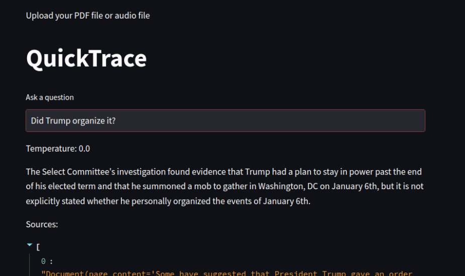

Eugenia Cao
Industrial Engineering & Computer Science @ Northwestern University
Projects
QuickTrace: An AI-powered Semantic Search Tool Designed for Investigative Reporting
Originating from The Media Party Hackathon (2023 Chicago), QuickTrace is an innovative online platform designed to assist journalists in effectively navigating through vast and diverse datasets utilizing AI-powered semantic search.

Leveraging LLMs for Enhanced STEM Education
Conduct under the Center for Connected Learning and Computer Modeling at Northwestern University, perform qualitative analysis using Large Language Models and compare it with human assessors.

Image Recognition
Use Convolutional Neural Networks like VGG16 and DenseNet to perform the task of image classification.
Applications involves face-mask detection and cats and dogs auto identification.

Skills
Education
Northwestern University, Chicago IL
Overall GPA: 3.94; Major GPA: 4.00
Activities: Murphy Scholar of McCormick School of Engineering, Bay Area Media Technological Innovation Program, Society of Women Engineers, McCormick Student Advisory Board
Photographs & Publications
Photojournalism
I'm a photo reporter working at the Daily's Northwestern, covering various forms of campus activities.
Art & Entertainment
ReFusionShaka hosts one of the biggest dance shows of the year on campus with more than 200 performers.


Sports
Northwestern has eight men's and eleven women's NCAA Division I sports teams and is marketed as "Chicago's Big Ten Team".


Get in touch
I'm interested in opportunities in all fields. Feel free to use the form for all kinds of questions!